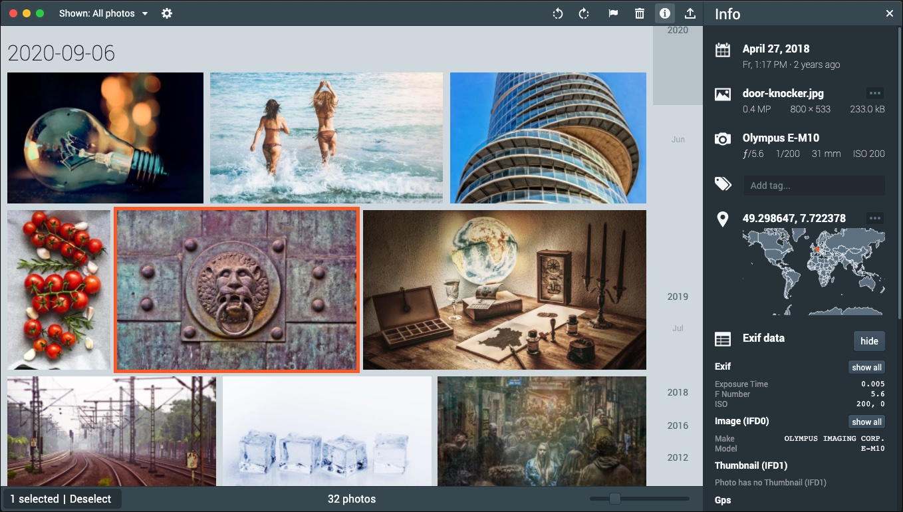

Picturama
Digital image organizer powered by the web

Download version 1.0.0
Download
Download
Download
Features
- Scan local files - Keep your privacy, don't upload your personal photos to a cloud service
- Non-Destructive - The original images won't be touched (unless you purge the trash)
-
Read raw formats of
a whole bunch of cameras
(only on Mac and Linux, see
Issue #25)
- Browse photos by dates
- View photo in detail (zoomable)
- View EXIF information
- Tags
- Favorites
- Rotate photos
- Delete photos